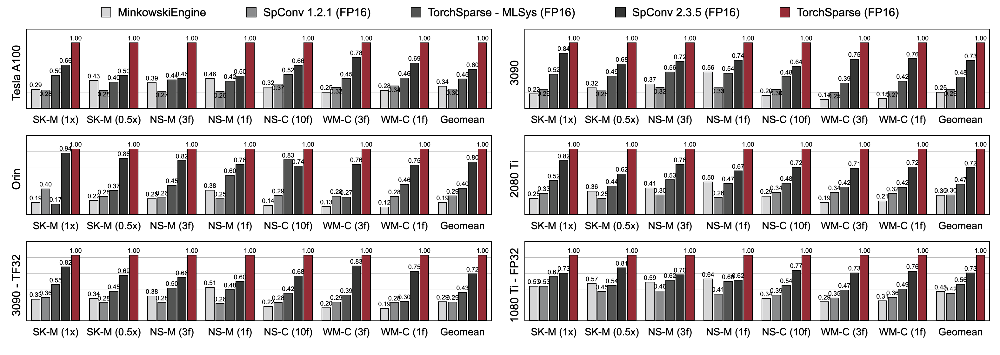
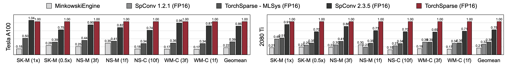

Introduction#
Point cloud computation has become an increasingly more important workload for autonomous driving and other applications. Unlike dense 2D computation, point cloud convolution has sparse and irregular computation patterns and thus requires dedicated inference system support with specialized high-performance kernels. While existing point cloud deep learning libraries have developed different dataflows for convolution on point clouds, they assume a single dataflow throughout the execution of the entire model. In this work, we systematically analyze and improve existing dataflows. Our resulting system, TorchSparse, achieves 2.9x, 3.3x, 2.2x and 1.7x measured end-to-end speedup on an NVIDIA A100 GPU over the state-of-the-art MinkowskiEngine, SpConv 1.2, TorchSparse (MLSys) and SpConv v2 in inference respectively.
Benchmarks#
Inference benchmarks#

TorchSparse significantly outperforms existing point cloud inference engines in both 3D object detection and LiDAR segmentation benchmarks across three generations of GPU architecture (Pascal, Turing and Ampere) and all precisions (FP16, TF32, FP32). It is up to 1.7x faster than state-of-the-art SpConv 2.3.5 and is up to 2.2x faster than
TorchSparse-MLsys on cloud GPUs. It also improves the latency of SpConv 2.3.5 by 1.25× on Orin.
Training benchmarks#

TorchSparse achieves superior mixed-precision training speed compared with MinkowskiEngine, TorchSparse-MLSys and SpConv 2.3.5. Specifically, it is 1.16x faster on Tesla A100, 1.27x faster on RTX 2080 Ti than state-of-the-art SpConv 2.3.5. It also significantly outperforms MinkowskiEngine by 4.6-4.8x* across seven benchmarks on A100 and 2080 Ti. Measured with batch size = 2.
Team#
TorchSparse is developed by the following wonderful team:
Haotian Tang: Ph.D. student (2020-) at MIT EECS, project lead, v2.0 and v2.1 lead;
Shang Yang: Ph.D. student (2023-) at MIT EECS, project lead, v2.1 lead;
Zhijian Liu: Ph.D. student (2018-) at MIT EECS, project lead, v2.0 lead;
Xiuyu Li: Ph.D. student (2022-) at UC Berkeley EECS, v2.0 lead;
Ke Hong: Graduate student (2021-) at Tsinghua University EE, v2.1 core developer, authored PCEngine kernels;
Zhongming Yu: Ph.D. student (2022-) at UCSD CS, v2.1 core developer, authored PCEngine kernels;
Yujun Lin: Ph.D. student (2018-) at MIT EECS, v2.0 core developer;
Guohao Dai: Associate Professor at Shanghai Jiao Tong University, mentor of the project;
Yu Wang: Professor at Tsinghua University, mentor of the project;
Song Han: Associate Professor at MIT EECS, mentor of the project.
Acknowledgement#
We thank Yan Yan from TuSimple for helpful discussions.
Please also have a look at the dgSparse library, which is designed for fast and efficient sparse computation on graphs and point clouds. The work from PCEngine (MLSys 2023) team is also highly related to us.